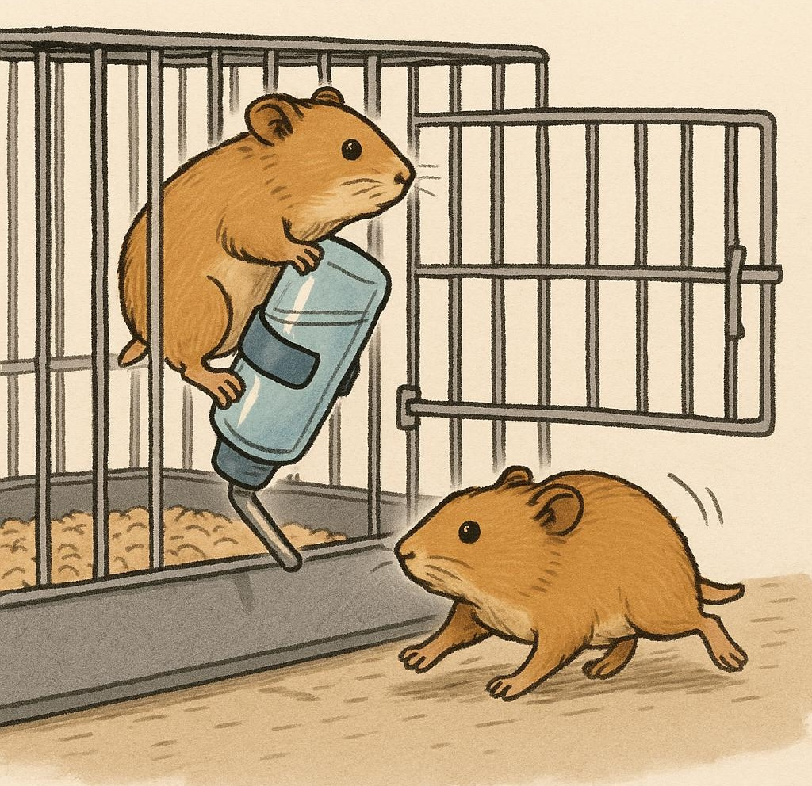

EFTER FLUGTEN Har du opdaget en hamster mangler? Få 6 gode råd til hvordan du håndterer hamsterflugten bedst Se mere
Født til flugt? Nogle hamsterracer slipper oftere ud end andre Hos plejehjemmets kæledyrshjørne har de efterhånden set ... Født til flugt? Nogle hamsterracer slipper oftere ud end andre Hos plejehjemmets kæledyrshjørne har de efterhånden set det meste. Men noget særligt har vakt opmærksomhed: Nogle hamstere bryder ud igen og igen - mens andre forbliver rolige i buret. Nu spørger forskere og dyrepassere: Er det racen, der afgør det? En ny undersøgelse foretaget i samarbejde med Dyreassistentuddannelsen og Nordisk Kæledyrsinstitut peger på, at visse racer har stærkere flugtinstinkt end andre - og at adfærd kan kobles direkte til type. Hvem vil helst ud? Guldhamstere, kendt for deres størrelse og styrke, topper listen over “mest flugtagtige racer”. Forskerne beskriver dem som “aktive, nysgerrige og med kraft nok til at flytte på låg og låse, hvis de ikke sidder fast”. Dværghamstere, især Roborovski-typen, derimod, er hurtige - men ikke nødvendigvis flugtplanlæggere. De reagerer mere på angst end på strategi. En teori bliver til Det hele begyndte med en række udbrud fra bur 3A og 4B, hvor personalet noterede, at de samme racer gentagne gange slap væk. “Det var som om de kunne lugte svaghederne i buret,” siger dyrepasser Morten. Et samarbejde med forskere blev sat i gang, og man begyndte systematisk at måle tid til udbrud, når racer blev placeret i identiske bure. Instinkt eller miljø? Eksperterne understreger, at miljø også spiller en rolle. Understimulerede hamstere - uanset race - forsøger oftere at slippe væk. Men racens evner gør forskellen: “Nogle racer har bedre redskaber til at gennemføre en flugt.” Hvad betyder det for dig? Hvis du selv passer hamstere, eller nyder at følge med i dyrene på plejehjemmet, så er racens temperament og fysiske egenskaber værd at kende. Vælg rolige racer, hvis buret ikke er 100 % sikkert. Sørg for aktivering og variation - det mindsker flugtbehov. Kend din hamster: Nysgerrige typer kræver ekstra overvågning. Hamstere er små, men komplekse væsner. Med lidt viden om racer og instinkter kan du bedre forstå deres adfærd - og måske undgå det næste store udbrud fra 4B. Luk Læs mere
Flugten fra bur 4B: Hamstere brugte drikkeflaske som vægtstang”  “De arbejdede sammen, som om de havde planlagt det.” Flugten fra bur 4B: Hamstere brugte drikkeflaske som vægtstang “De arbejdede sammen, som om de havde planlagt det. Den ene holdt vagt, den anden skubbede flasken op. Og så – ud under lågen!” Sådan beskriver Henny på 78 det, der mest af alt lignede et hamsterkup i miniformat. Det skete i Plejehjemmets kæledyrshjørne, hvor to energiske hamstere fandt en vej ud fra bur 4B - via den ellers uskyldige drikkeflaske. Et drama i stilhed Det var en stille formiddag, indtil Henny fik øje på noget usædvanligt: “Jeg troede først, de bare legede. Men så så jeg, hvordan den store hamster kravlede op og brugte flasken som vippearm. Den vippede hele lågen op!” En medarbejder blev tilkaldt, men da var flugten allerede sket. Hamsterne blev fundet bag en bogreol et par timer senere - lettere støvede, men i fin form. Luk Læs mere
Velkommen hjem, lille ven: Sådan hjælper du en flugthamster tilbage til ro og tryghed Men hvad gør du, når din hamster endelig vender hjem igen, træt og forvirret? Her får du en enkel og rolig guide til at tage dig af en lille ven, der har været på afveje. Velkommen hjem, lille ven: Sådan hjælper du en flugthamster tilbage til ro og tryghed Hamstere er små, nysgerrige væsner - og indimellem slipper de ud. Men hvad gør du, når din hamster endelig vender hjem igen, træt og forvirret? Her får du en enkel og rolig guide til at tage dig af en lille ven, der har været på afveje. 1. Giv ro og tryghed først Lad ikke nysgerrigheden tage overhånd. Når din hamster kommer hjem, har den brug for stilhed. Sæt den forsigtigt i buret igen - helst i det område, den sover i. Sluk høje lyde, og undgå at løfte eller klappe for meget de første par timer. 2. Tjek for skader og dehydrering En hamster, der har været væk i længere tid, kan være dehydreret. Giv straks adgang til frisk vand. Brug evt. en lille pipette, hvis den virker for svag til at drikke selv. Kig også efter sår, ømhed eller haltende bevægelser. Tip: Lav en lille tjekliste du kan printe og hænge på buret. 3. Tilbyd blid mad og snacks Lad den ikke gå løs i foderblandingen med det samme. Start med lidt agurk eller æble (uden kerner) og lidt hamsterfoder. Undgå fed mad og nødder de første timer, da maven kan være sart efter stress. 4. Hold øje - men giv plads Overvåg din hamster nænsomt det første døgn. Ser den ud til at drikke, spise og bevæge sig som normalt? Hvis den gemmer sig i mange timer, så lad den være - men noter dig varigheden. Mistænker du skader, så kontakt en dyrlæge. 5. Forebyg næste flugt Mange hamsterflugter sker på grund af åbne låger eller for lave bure. Tjek buret grundigt - især hjørner, låsemekanismer og hjulets placering. Overvej at flytte buret væk fra ledninger eller møbler, de kan kravle op ad. Husk: For en hamster føles verden enorm. Når den vender hjem, har den mest brug for en rolig, kærlig hånd - og et sikkert sted at være. Med lidt tålmodighed og de rette førstehjælpstrin kan din lille ven hurtigt føle sig tryg igen. Luk Læs mere